20 سؤال
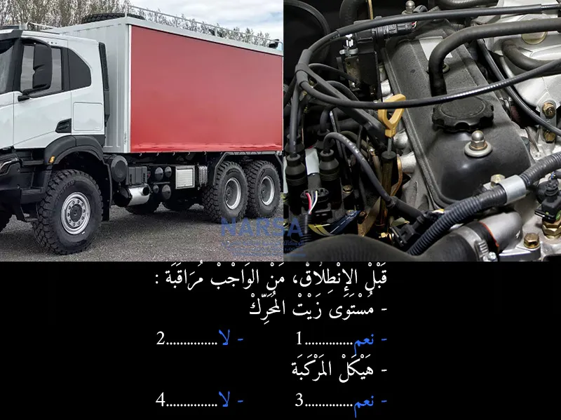
الجواب الصحيح: 1 و 3
مراقبة كليهما:
مستوى زيت المحرك: يُعد فحص مستوى زيت المحرك أمرًا حيويًا قبل كل انطلاق لضمان تزييت المحرك بشكل كافٍ ومنع الأعطال والتلف. يجب أن يكون مستوى الزيت بين علامتي الحد الأدنى والأقصى على مقياس الزيت. 🛢️
هيكل المركبة: يشمل فحص الهيكل الخارجي للمركبة الأضواء، الإشارات، المرايا، النوافذ، الإطارات، والتأكد من عدم وجود أي أضرار واضحة، تسربات، أو أجزاء مفكوكة. هذا يضمن أن المركبة آمنة للتشغيل وأنها مرئية بوضوح للمركبات الأخرى. 🏗️
لذلك، كلا العنصرين ضروريان للمراقبة قبل الانطلاق لضمان سلامة وكفاءة المركبة.
الجواب الصحيح هو:
نعم (لمستوى زيت المحرك) ✅
نعم (لهيكل المركبة) ✅
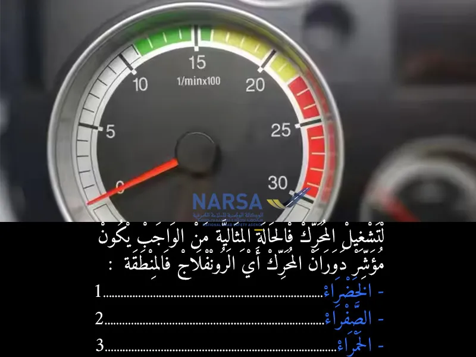
الجواب الصحيح: 1
مؤشر دوران المحرك (RPM gauge أو Tachometer) في المركبات، وخاصة الشاحنات، يحتوي على مناطق ملونة تشير إلى كفاءة تشغيل المحرك:
المنطقة الخضراء 🟢: هذه هي منطقة التشغيل "الاقتصادية" أو "المثالية". عندها يكون المحرك يعمل بأقصى كفاءة في استهلاك الوقود وأقل إجهاد، مما يطيل من عمره ويقلل من الانبعاثات. ينصح السائقون دائمًا بالحفاظ على مؤشر دوران المحرك في هذه المنطقة أثناء القيادة العادية.
المنطقة الصفراء 🟡: هذه المنطقة تشير إلى سرعة دوران أعلى من المثالية، قد تزيد من استهلاك الوقود وتسبب بعض الإجهاد على المحرك إذا استمرت لفترات طويلة. قد تكون ضرورية في بعض الحالات مثل الصعود على منحدرات حادة أو عند الحاجة إلى قوة أكبر بشكل مؤقت.
المنطقة الحمراء 🔴: هذه هي منطقة "الخطر" أو "الحد الأقصى". القيادة ومؤشر دوران المحرك في هذه المنطقة تسبب إجهادًا شديدًا للمحرك، ويمكن أن تؤدي إلى ارتفاع درجة الحرارة، تآكل سريع، أو حتى تلف المحرك. يجب تجنب القيادة في هذه المنطقة تمامًا.
للتشغيل الفعال والحالة المثالية للمحرك (أي أداء جيد مع استهلاك وقود معقول وإجهاد أقل للمحرك)، يجب أن يكون مؤشر دوران المحرك في المنطقة الخضراء.
الجواب الصحيح هو:
الخضراء ✅
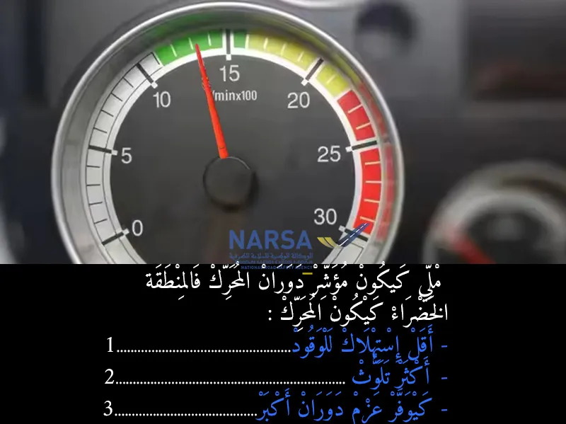
الجواب الصحيح: 1 و 3
أقل استهلاك للوقود: هذا صحيح. القيادة في المنطقة الخضراء تهدف إلى تحقيق أقصى كفاءة في استهلاك الوقود. ⛽️
أكثر تلوث: هذا غير صحيح. التشغيل الفعال للمحرك في المنطقة الخضراء يقلل من الانبعاثات والتلوث. 🌳
كيوفر عزم دوران أكبر: عزم الدوران الأقصى عادة ما يكون عند دورات محرك أعلى (ربما في المنطقة الصفراء أو بداية الحمراء)، ولكن القيادة الاقتصادية ليست بالضرورة لتحقيق أقصى عزم دوران، بل لتحقيق الكفاءة. ⚡️
بناءً على ذلك، عندما يكون مؤشر دوران المحرك في المنطقة الخضراء، يكون المحرك يستهلك وقودًا أقل.
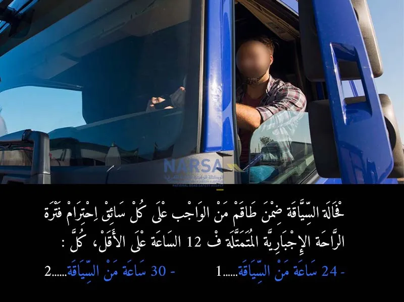
الجواب الصحيح: 2
مدة الراحة اليومية:
يجب ألا تقل مدة الراحة اليومية للسائق عن 12 ساعة خلال كل فترة من 24 ساعة.
في حالة السياقة ضمن طاقم يجب على السائق الذي يشارك ضمن طاقم أن يكون قد أخذ مدة راحة يومية جديدة من 12 ساعة على الأقل خلال 30 ساعة.
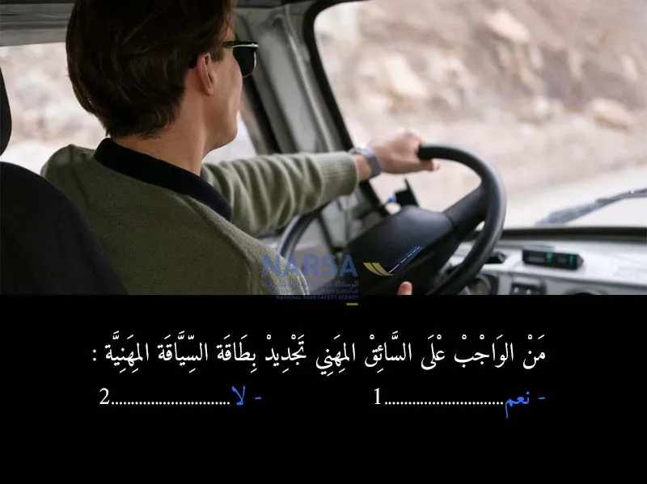
الجواب الصحيح: 1
نعم، من الواجب على السائق المهني تجديد بطاقة السياقة المهنية بشكل دوري. ✅
تُعد بطاقة السائق المهني وثيقة إلزامية لكل سائق يمارس مهنة النقل الطرقي بالمغرب، وهي تخضع للتجديد المنتظم. الغرض من التجديد هو التأكد من أن السائق لا يزال مؤهلاً بدنياً وذهنياً لممارسة المهنة، وأنه قد خضع للتكوين المستمر اللازم.
الجواب الصحيح هو:
نعم ✅
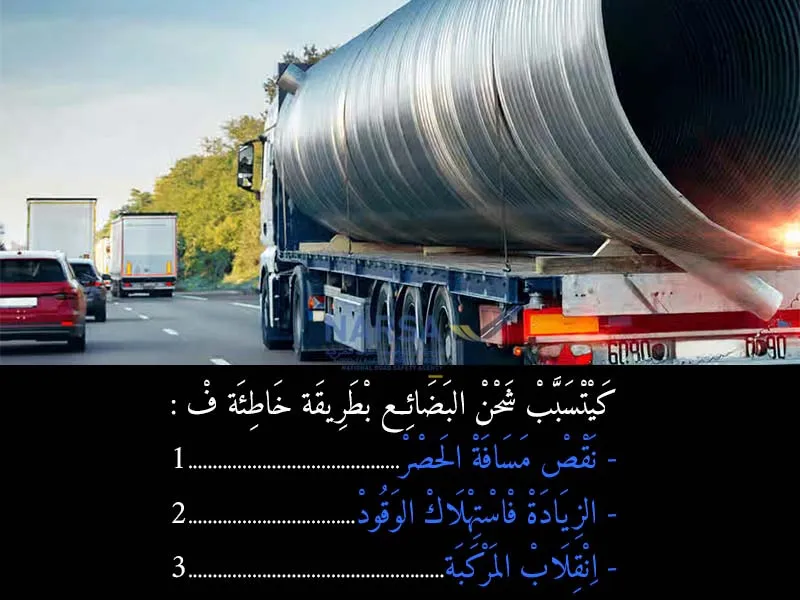
الجواب الصحيح: 2 و 3
شحن البضائع بطريقة خاطئة كيأدي إلى زيادة في استهلاك الوقود، وخطر انقلاب المركبة، حيث التوزيع غير المتوازن للحمولة كيأثر على ثبات المركبة وتحكم السائق فيها. لهذا السبب، من المهم تثبيت وتحميل البضائع بشكل صحيح لتجنب هذه المخاطر.
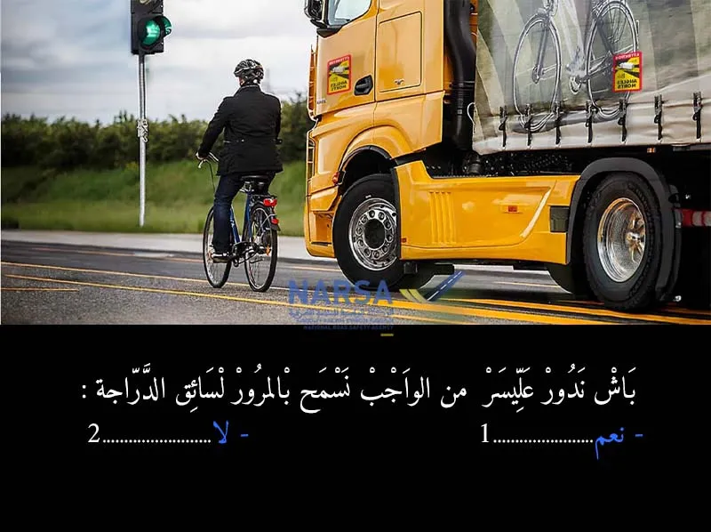
الجواب الصحيح: 1
وفقًا لمدونة السير المغربية وقواعد المرور العامة:
عند الدوران إلى اليسار، يجب على السائق إعطاء الأولوية للمركبات القادمة من الاتجاه المعاكس والتي تسير بشكل مستقيم.
الأهم من ذلك، يجب على السائق إعطاء الأولوية لجميع مستعملي الطريق الذين يسيرون في مسارهم الصحيح، بما في ذلك المشاة وراكبو الدراجات 🚲، خاصة عند تغيير الاتجاه. سائق الدراجة هنا يسير بشكل مستقيم وله الحق في المرور قبل أن تقوم الشاحنة بالدوران وقطع مساره.
لذلك، نعم، من الواجب السماح بالمرور لسائق الدراجة.
الجواب الصحيح هو:
نعم ✅
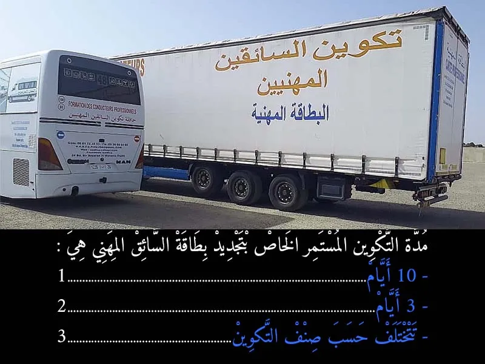
الجواب الصحيح: 3
مدة التكوين المستمر لتجديد بطاقة السائق المهني هي خمسة أيام بالنسبة لسياقة الحافلات والنقل العمومي للمسافرين وثلاثة أيام بالنسبة لسياقة مركبات نقل البضائع. يجب الخضوع للتكوين المستمر كل خمس سنوات من تاريخ آخر تكوين.
الجواب الصحيح هو:
3. تختلف حسب صنف التكوين ✅
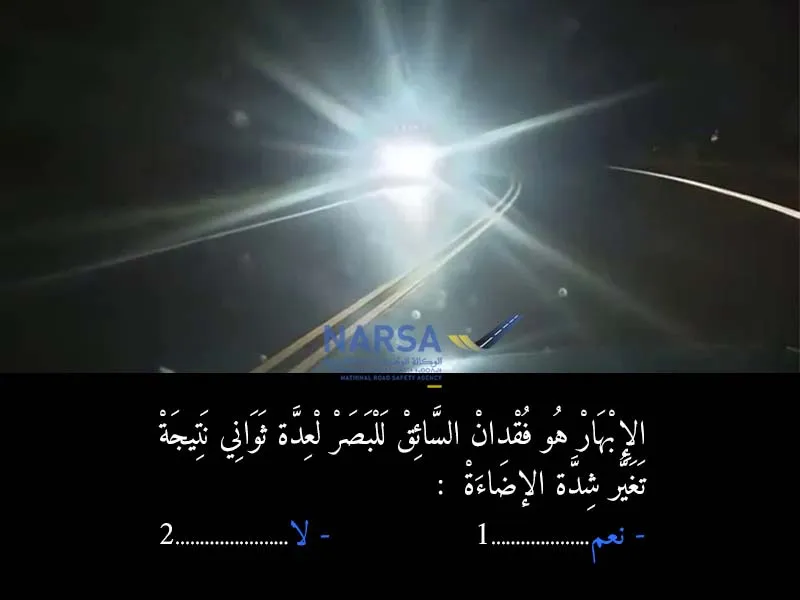
الجواب الصحيح: 1
الإبهار هو وقت كيضربك ضوء قوي فجأة، بحال ملي كتجي من الظلام للضوء القوي أو من ضوء ضعيف لضوء قوي فجأة. هاد الشي كيتسبب فـ فقدان مؤقت للبصر عند السائق لمدة ثواني، وهاد الشي كيدير خطر كبير لأنه ما كيقدرش يشوف الطريق مزيان.
مثلاً:
ملي كتجي من نفق مظلم وتضوي عليك أضواء السيارة المقابلة.
أو ملي الشمس كتشرق أو كتغيب فجأة وأشعتها كتدخل عينيك.
هاد الحالة كتسمى الإبهار وهي سبب رئيسي فالحوادث إلا ما خدّيتش الحيطة.
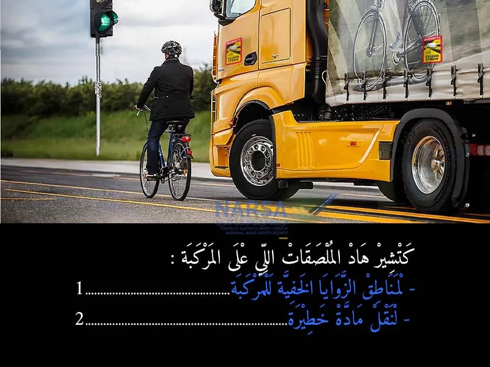
الجواب الصحيح: 1
هذه الملصقات، خاصة تلك ذات الألوان الفسفورية أو العاكسة، تُستخدم عادةً لتحديد مناطق الزوايا الخفية للمركبة (Angles morts). هذه المناطق هي المساحات المحيطة بالمركبة والتي لا يستطيع السائق رؤيتها مباشرة من خلال النوافذ أو المرايا. تعد هذه الملصقات إلزامية في بعض البلدان وتساعد على تحذير مستعملي الطريق الآخرين (خاصة سائقي الدراجات والمشاة والمركبات الأصغر) من هذه المناطق الخطرة، وبالتالي تقليل حوادث الاصطدام.
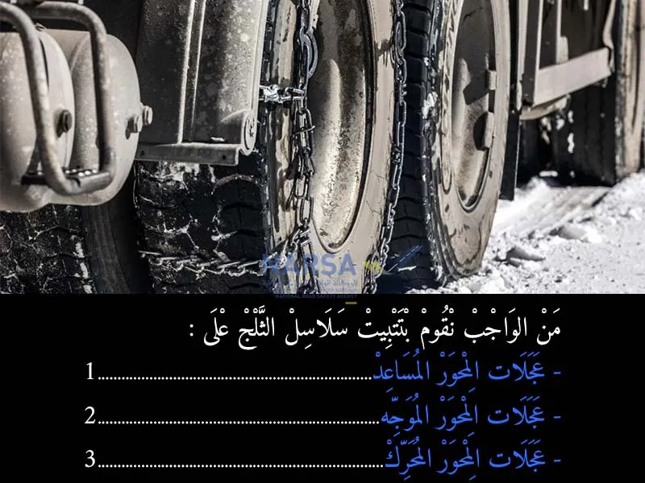
الجواب الصحيح: 3
عند القيادة في ظروف ثلجية أو جليدية، تُستخدم سلاسل الثلج لزيادة الجر والتحكم في المركبة. طريقة تركيبها تختلف قليلاً حسب نوع المركبة ونظام الدفع:
للمركبات ذات الدفع الخلفي (الشاحنات غالبًا): تُركب السلاسل على العجلات الخلفية (عجلات الدفع) لزيادة الجر.
للمركبات ذات الدفع الأمامي: تُركب السلاسل على العجلات الأمامية (عجلات الدفع).
للمركبات ذات الدفع الرباعي: يفضل تركيبها على العجلات الأربعة، أو على الأقل على المحورين الأكثر أهمية للجر.
لذلك، يجب تثبيت سلاسل الثلج على العجلات التي توفر الدفع للمركبة، وهي عجلات المحور المحرك.
الجواب الصحيح هو:
3. عجلات المحور المحرك ✅
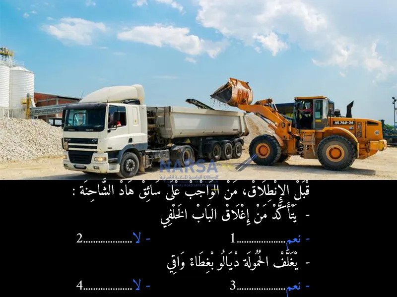
الجواب الصحيح: 1 و 3
لكلتا النقطتين أهمية قصوى لسلامة النقل:
التأكد من إغلاق الباب الخلفي: إذا لم يكن الباب الخلفي للشاحنة القلابة مغلقًا بإحكام، فإن الحمولة (كالتراب أو الركام) ستتسرب على الطريق، مما يشكل خطرًا جسيمًا على المركبات الأخرى وعلى البيئة، بالإضافة إلى فقدان الحمولة.
نعم ✅ (يجب التأكد من إغلاق الباب الخلفي).
تغطية الحمولة بغطاء واقي: الحمولة مثل التراب، الرمل، الحصى، أو أي مواد فضفاضة أخرى، يمكن أن تتطاير من الشاحنة أثناء السير بفعل الرياح أو الاهتزازات. هذا الغبار أو الحصى المتطاير يشكل خطرًا على السيارات الأخرى (تقليل الرؤية، إلحاق الضرر بالزجاج أو طلاء السيارات) وعلى المارة. لذلك، يجب تغطية هذه الحمولات بغطاء لمنع تطايرها.
نعم ✅ (يجب تغطية الحمولة بغطاء واقي).
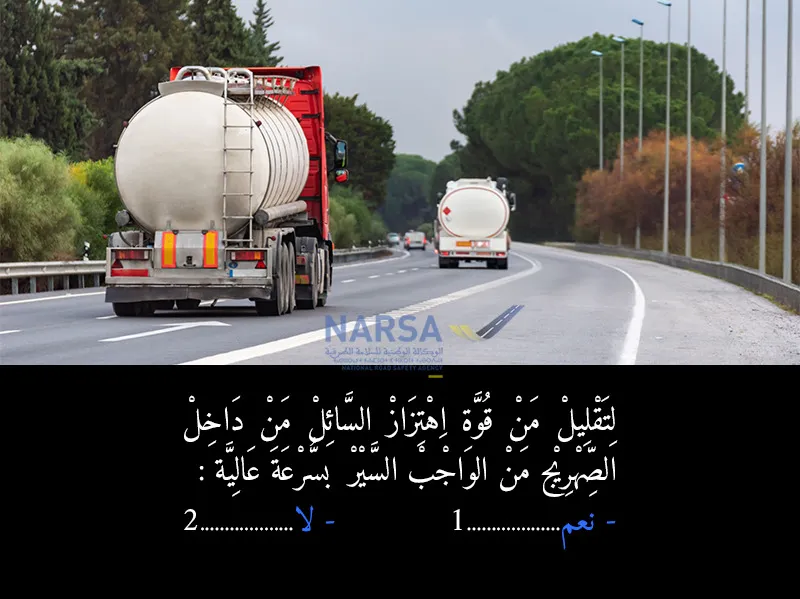
الجواب الصحيح: 2
هذا النوع من الشاحنات ينقل مواد سائلة (مثل الوقود، الحليب، الماء، أو مواد كيميائية). عندما تتحرك المركبة بسرعة، يمكن أن يتحرك السائل داخل الصهريج بقوة (تأثير الأمواج أو الارتجاج)، مما يؤثر سلبًا على استقرار الشاحنة ويزيد من خطر الانقلاب، خاصة عند المنعطفات أو التوقف المفاجئ.
لذلك، لتقليل قوة اهتزاز السائل داخل الصهريج والحفاظ على استقرار المركبة، لا يجب السير بسرعة عالية. بل على العكس، يجب على السائقين القيادة بحذر وبسرعة معتدلة، وتجنب الفرملة المفاجئة أو المناورات الحادة.
الجواب الصحيح هو:
2. لا ✅
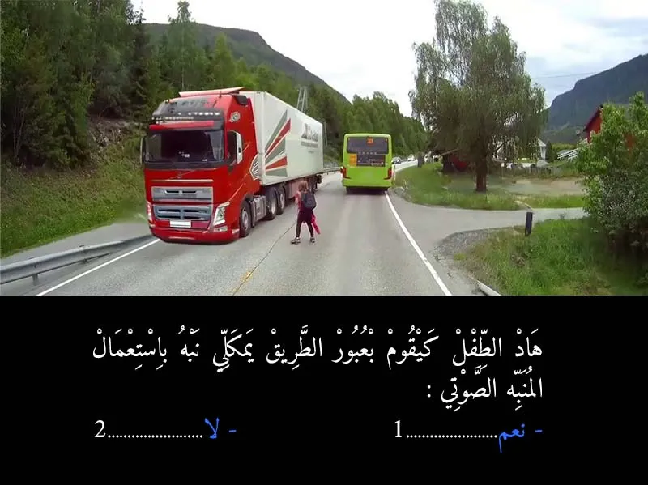
الجواب الصحيح: 1
القاعدة العامة هي تجنب استخدام المنبه الصوتي على المشاة، خاصة الأطفال، إلا في حالة خطر وشيك ومباشر حيث لا يوجد بديل آخر لتجنب الاصطدام. في هذه الحالة، يجب على السائق تخفيض السرعة والاستعداد للتوقف وإعطاء الأولوية للطفل، وليس استخدام المنبه الصوتي لتنبيهه.
الجواب الصحيح هو:
2. لا ✅
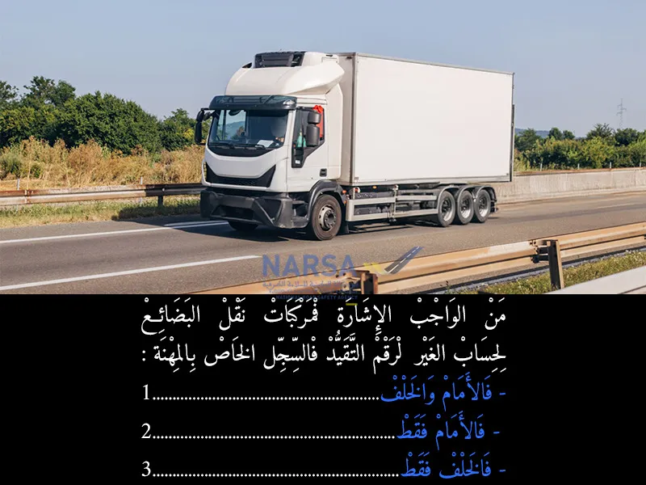
الجواب الصحيح: 1
نعم، من الواجب الإشارة لمركبات نقل البضائع لحساب الغير برقم التقييد في السجل الخاص بالمهنة. هذا الإجراء ضروري لضمان استيفاء الشروط اللازمة لممارسة هذه المهنة بشكل قانوني.
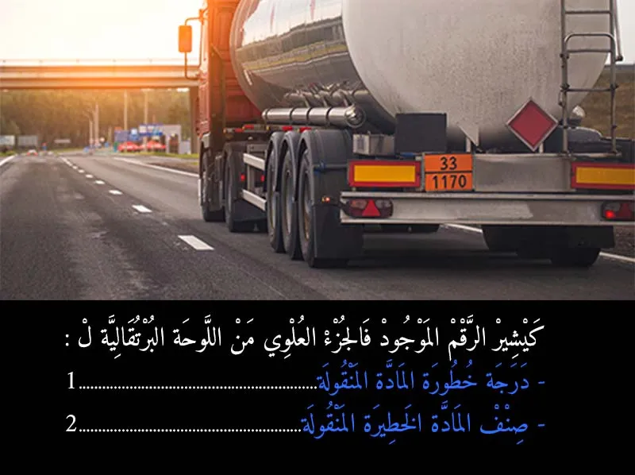
الجواب الصحيح: 1
الجواب الصحيح هو:
درجة خطورة المادة المنقولة ✅
- الرقم العلوي : هذا الرقم يتكون من رقمين أو ثلاثة (مثل "33" في الصورة). وهو يشير إلى درجة خطورة المادة المنقولة وطبيعة المخاطر التي تنطوي عليها (مثل قابلية الاشتعال، التفاعل مع الماء، الانبعاثات السامة، إلخ). الرقم الأول يشير إلى الخطر الأساسي، وقد تتكرر الأرقام لتدل على شدة الخطر.
- الرقم السفلي : هذا الرقم يتكون من أربعة أرقام (مثل "1170" في الصورة). وهو يحدد الصنف الدقيق للمادة المنقولة وفقًا لتصنيف الأمم المتحدة للمواد الخطرة (UN Number).
بما أن السؤال يخص الرقم العلوي ("الرقم الموجود فالجزء العلوي")، فإنه يشير إلى درجة خطورة المادة.
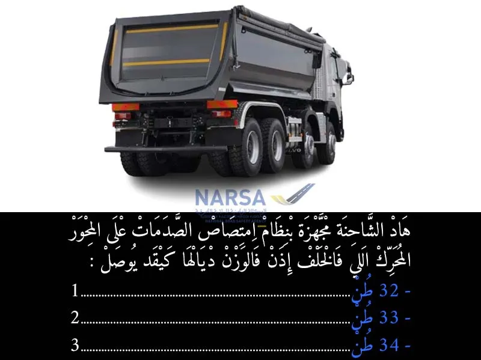
الجواب الصحيح: 1
بالنسبة للوزن الاقصى بالنسبة لمركبة منفردة بمحرك:
- 2 ديال المحاور ، فالوزن الاقصى هو 18 طن .
- 3 ديال المحاور ، فالوزن الاقصى هو 26 طن .
- 4 ديال المحاور ، فالوزن الاقصى هو 32 طن .
في هذا الحالة هذا الشاحنة عندها 4 ديال المحاور، اذن الجواب الصحيح هو 1.
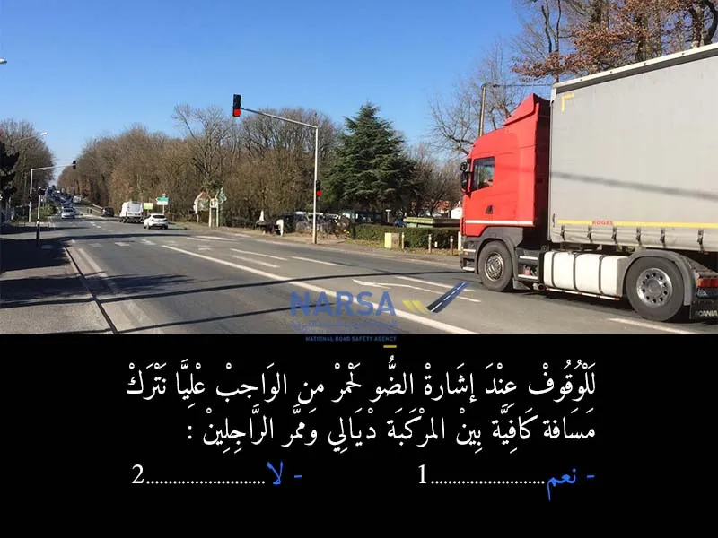
الجواب الصحيح: 1
عند التوقف عند إشارة ضوئية حمراء أو علامة قف، يجب على السائقين التوقف قبل ممر الراجلين مباشرة (أو قبل خط التوقف إن وجد). الهدف من ذلك هو:
فسح المجال للمشاة: للسماح لهم بالعبور بأمان دون أن تعيقهم المركبات. 🚶♀️🚶
تجنب إعاقة حركة المشاة: حتى لو لم يكن هناك مشاة يعبرون في تلك اللحظة، فإن الوقوف على الممر يعيق حركتهم المحتملة ويشكل مخالفة.
السلامة العامة: ترك مسافة كافية يضمن عدم مفاجأة المشاة أو إجبارهم على الانحراف عن مسارهم.
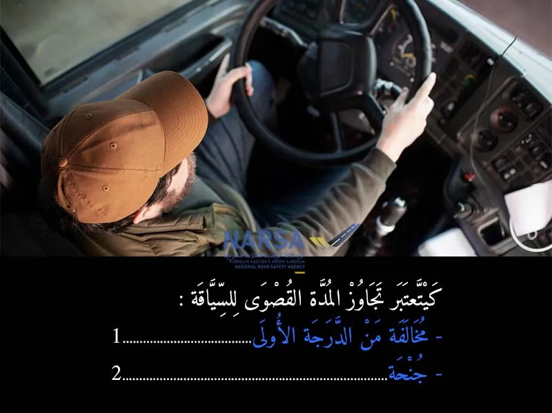
الجواب الصحيح: 2
وفقًا للمعلومات التي قدمتها سابقًا تحت عنوان "الجنح المتعلقة بسلوك السائق"، وتحديدًا المادة 176:
"يعاقب بغرامة من ألف ومائتين (1.200) إلى ثلاثة آلاف (3.000) درهم وبتوقيف رخصة السياقة لمدة تتراوح ما بين شهر واحد وثلاثة أشهر، كل سائق ارتكب إحدى المخالفات التالية:
عدم تشغيل جهاز قياس السرعة وزمن السياقة؛
تجاوز المدة القصوى للسياقة؛
عدم احترام مدة الراحة."
بما أن المادة 176 تُصنف هذه الأفعال وتحدد لها عقوبات معينة، فهي تُصنف ضمن الجنح.
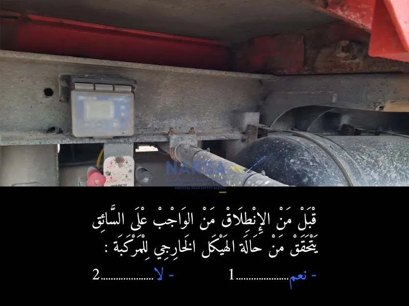
الجواب الصحيح: 1
هذا الفحص الروتيني جزء أساسي من الصيانة الوقائية والسلامة الطرقية، ويساعد على اكتشاف أي مشاكل محتملة قبل أن تتسبب في حوادث أو أعطال أثناء القيادة.